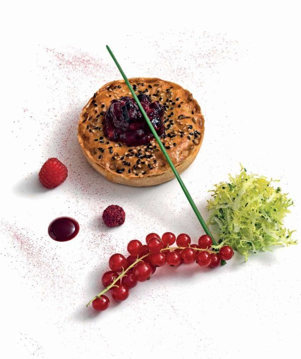

Chicken tikka masala pie with wild berry compote (Khasta murg)

Wild berries and chicken tikka? You might think I’ve got this all wrong, but try it and you’ll appreciate what a great match this unusual combination is. This is one of my signature dishes on the à la carte menu.
For the pastry
For the tikka masala gravy
For the wild berry compôte
For the raspberry sauce
For the frisee salad
To garnish
Put the tandoori marinade in a large non-metallic bowl and rub all over the chicken thighs until well coated. Cover and leave in the fridge to marinate for at least 2 hours, or overnight.
Next make the pastry. Put the flour, butter and salt into a food processor, and pulse until the mixture resembles breadcrumbs. Add 105ml cold water with the motor running and process just until it forms a soft dough. Shape the dough into a ball and flatten, then dust with flour, wrap in clingfilm and leave to rest in the fridge for at least 30 minutes.
Meanwhile, make the tikka masala gravy. Heat oil in a wok, add the tandoori marinade and simmer for 2 minutes. Add both gravies and the coriander leaves and ginger, then remove from the heat and pour the mixture into a roasting tray to cool.
To make the compôte, put all the ingredients in a saucepan over a medium heat, stirring to dissolve the sugar and reduce it to a chutney-like texture. Remove from the heat and leave to cool to room temperature.
After the chicken has marinated, preheat the oven to 240°C. Transfer the chicken thighs to a roasting tin and roast for 10 minutes, or until the juices run clear when pierced with the tip of a knife. Remove them from oven and leave to cool.
When both the chicken and gravy are cool, cut the thighs into thick strips so it’s easier to fit them in the pie tins. Mix the strips with the cooled tikka masala gravy and set aside.
Roll out the pastry on a lightly floured surface until slightly less than 5mm thick. Cut out four 12cm rounds and line the base of four 10cm pie tins, each 2cm deep. Divide the chicken filling among the tins, making sure to fill each one well so they have a slight dome in the centre. Reroll the pastry trimmings and cut out four 10cm rounds. Brush a little beaten egg around the edge of the pastry in one tin, then lay a pastry round on top and seal the edge well. Trim off any excess and poke a small steam hole in the top. Pinch the edges together using your thumb and your forefinger. Repeat to make 3 more pies.
Reheat the oven to 180°C.
Brush each top with beaten egg and sprinkle with sesame seeds. Bake for 20–25 minutes until the pastry is golden and the filling is hot.
While the pies are baking, make the raspberry sauce. Place all the ingredients in a saucepan and simmer over a medium heat, stirring, until the sugar dissolves. Remove from the heat and keep hot.
Just before serving, toss all the salad ingredients together in a non-metallic bowl.
To serve, place the pies on individual plates with a spoonful of the compôte on top of each. Add the salad, garnish and serve.